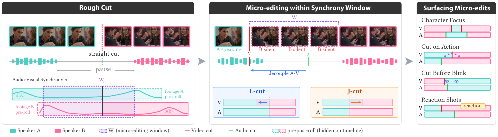
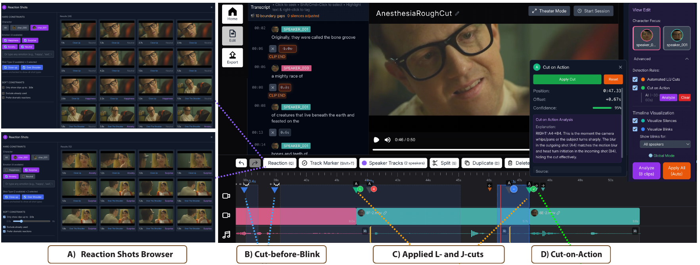

Shape the timing
Shift a cut along the timeline to trim or extend pauses and control the pacing of dialogue, with pre-roll and trim/extend hotkeys for fine-scale adjustments during playback.
- Trim
- Extend
UIST 2026
1 Cornell University2 Adobe Research
* Work done during an internship at Adobe Research.

In film editing, every frame matters. While macro, content-level edits shape the high-level narrative of a film, small local edits often control timing and direct visual attention. For example, editors can adjust the precise timing of clips to control the length of a meaningful silence, or cut to shots that highlight a specific character’s reactions to important moments. These small, detailed edits are slow and tedious to make in standard editing tools because users have to map high-level narrative goals to low-level frame-by-frame adjustments. At the same time, these fine-scale adjustments, which we call micro-edits, can be nuanced and expressive, with different choices serving different creative goals. In this work, we start by conducting a formative study with professional editors to understand the structure of micro-edits and how they are used. We then derive a mathematical formalization for this structure to develop tools that leverage AI and optimization to make exploring micro-edits simpler and more efficient for users. Finally, we validate our tools in multiple user studies and a wide range of video examples.
Micro-edits come in two kinds. Starting from a rough cut, our tools help editors explore both within audio-visual synchrony windows, where audio and video can be safely decoupled.
Shift a cut along the timeline to trim or extend pauses and control the pacing of dialogue, with pre-roll and trim/extend hotkeys for fine-scale adjustments during playback.
Decouple video from audio to place L- and J-cuts: automatically emphasize a selected character, cut on action, or cut before a blink. Reaction shots add non-speaking moments on an overlay track, browsable by character, emotion, and shot type.

Compare rough cuts with micro-edited variations, alongside timelines and synchrony visualizations.
Hospital and Restaurant footage © CineStudy. Some thumbnails in the paper are © EditStock. Additional results are available; we will seek permission from the rights holders before posting them here.
To appear in the 39th Annual ACM Symposium on User Interface Software and Technology (UIST 2026).
@inproceedings{tran2026microedits,
title = {Micro-Edits: Computational Support for Fine-Scale Edits in Film},
author = {Tran, Nhan (Nathan) and Shin, Hijung Valentina and
Davis, Abe and Leake, Mackenzie},
booktitle = {The 39th Annual ACM Symposium on User Interface
Software and Technology},
series = {UIST '26},
year = {2026},
publisher = {Association for Computing Machinery},
doi = {10.1145/3830398.3830545}
}


{kind=link}
{kind=link}